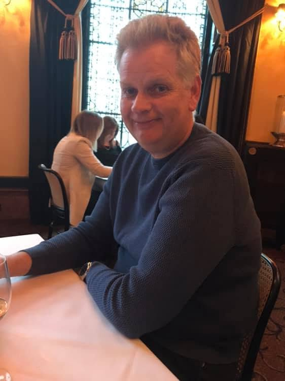

Birger Henning Sørum
Initiativtaker · Styreleder
Henning er initiativtaker og leder av styret for innsamlingsaksjonen. Ideen fikk han etter å ha hørt hvor vanskelig det er å etablere kaffeplantasjer på grunn av finansielle utfordringer. Henning har jobbet i DNB Bank ASA i hele sin yrkeskarriere og jobber nå som internrevisor. På fritiden er kor og fotografering viktig, men ikke så viktig som familie og venner, og han er glad for å ha med seg Hanna (datter) og Simen (sønn) i styret. Ellers tenker han at ingen kan hjelpe alle, men alle kan hjelpe noen.